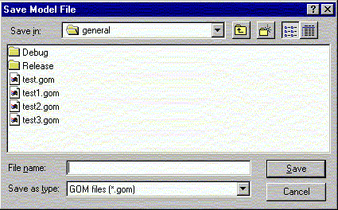

**************************************************************************
Save model file widget
Leif Laaksonen CSC 1997
**************************************************************************
Save current display information into a gom file. This file can later be read back and the session can continue.
Save the session using the widget:

Line command option: see msave command
**************************************************************************
LUL/1997
**************************************************************************